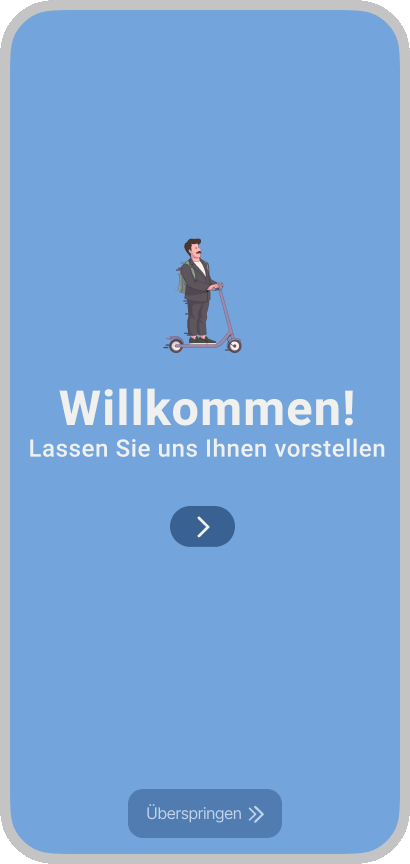

Scooter App

Wir haben eine benutzerfreundliche App entwickelt, die dir ermöglicht, im Handumdrehen ein Fahrrad oder einen E-Scooter auszuleihen. Um sicherzustellen, dass die App genau auf die Bedürfnisse der Nutzer abgestimmt ist, haben wir im Vorfeld Interviews geführt und tiefgreifende Analysen durchgeführt. Diese Einsichten halfen uns, eine intuitive und effiziente Nutzeroberfläche zu gestalten.
Design und Entwicklungsprozess
Unser Prototyp folgt modernen Design- und Entwicklungsprozessen wie dem Human-Centered-Design und dem Double Diamond Process of Design. Dabei stand immer der Benutzer im Mittelpunkt. Durch diverse Evaluationsmethoden, einschließlich Prototyping und Usability Testing, haben wir die App stetig verbessert. Ziel war es, eine App zu kreieren, die nicht nur einfach zu bedienen ist, sondern auch den Ausleihprozess so angenehm und schnell wie möglich macht.
Funktionalitäten
Das Ergebnis ist eine klar strukturierte App, die dir zeigt, wo das nächste verfügbare Fahrrad oder E-Scooter steht, und dich mit wenigen Klicks zur nächsten freien Fahrt bringt. Wir haben darauf geachtet, dass die App nicht nur funktionell, sondern auch ansprechend gestaltet ist, um eine positive User Experience zu gewährleisten.
Mit dieser App wollen wir es für jeden einfach machen, mobil zu sein – ohne lange Wartezeiten oder komplizierte Vorgänge. Einfach die App öffnen, Fahrzeug auswählen und losfahren. So unterstützt unser Prototyp eine umweltschonende und flexible Art der Fortbewegung in der Stadt.